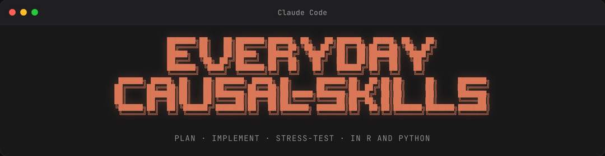

🇺🇸 English | 🇧🇷 Português (BR)
everyday-causal-skills

Use it to think through causal problems, plan your analysis, and implement it: conceptually or in R and Python.
A causal inference plugin for AI agents. Describe a problem in plain language and it helps you choose a method, check assumptions, write the analysis in R or Python, and stress-test the results. Made for practitioners who want a structured workflow and learners building intuition alongside the book.
Works with: Claude Code · Gemini CLI · GitHub Copilot CLI · Codex CLI · Cursor
Who this is for: Anyone who needs to measure whether something actually worked, such as Marketing and growth teams; Product managers and BI analysts; Data scientists; Revenue and operations teams; Policy researchers; Students and self-taught practitioners.
What you get from this plugin
The plugin works in five steps, from refining the question you want to answer, to writing the report. You are free to pick and start from any step you like.
→ Describe your problem
→ Get a method recommendation
→ Check assumptions and structure the analysis
→ Stress-test the results
→ Write the executive reportExample use case 1: Designing an A/B test
An e-commerce team redesigned their checkout page and wants to know if it increases conversion before rolling it out to everyone. They’re not sure how long the test needs to run.
You:
/causal-experimentsWe redesigned our checkout page and want to A/B test if it increases conversion. How long should we run the experiment?
The plugin asks a few follow-up questions in plain language: what’s your current conversion rate, how many visitors do you get per week, and what’s the smallest improvement that would make the redesign worth it. From your answers, it calculates the sample size and tells you how many weeks the test needs to run to detect that difference reliably.
Then it flags design decisions you might not have thought about — like whether to randomize by visitor or by session, and how to handle users who see both versions during the test.
You: We can randomize by visitor using a cookie. What about users who abandon and come back?
It walks you through those edge cases, writes the analysis code in R or Python, and builds in the checks you’ll need: balance diagnostics to make sure the groups are comparable, and a pre-registered analysis plan so you’re not fishing for results after the fact.
By the time you launch the test, the analysis is already written. When the data comes in, you run the code and get the answer.
Example use case 2: Measuring the impact of a loyalty program
A retail company rolled out a loyalty program in 12 of its 50 stores and wants to know if repeat purchases actually increased — or if the stores that got the program were already trending up.
You:
/causal-plannerWe launched a loyalty program in 12 stores three months ago. The other 38 stores didn’t get it yet. I want to know if repeat purchases increased because of the program.
The plugin asks about your data structure — how far back your records go, whether you chose the 12 stores or they were assigned somehow, and what outcome you’re tracking. Based on your answers, it recommends difference-in-differences and explains why: you have treatment and control groups with data before and after the rollout.
You:
/causal-didI have weekly repeat purchase rates for all 50 stores going back 18 months.
The skill checks whether the treated and untreated stores were following similar trends before the program launched — the key assumption that makes the method work. It writes the estimation code in R or Python, runs placebo and robustness checks, and flags problems before you waste time on results that won’t hold up.
Once you have the estimate, /causal-auditor stress-tests the analysis: could something other than the program explain the difference? Were the 12 stores chosen in a way that biases the result? You get a list of threats to address before presenting the findings.
Skills
| Skill | Purpose |
|---|---|
/causal-planner |
Describe a causal question in plain language and get a method recommendation with an analysis plan |
/causal-dag |
Map causal relationships, find adjustment sets, detect bad controls |
/causal-experiments |
Design and analyze RCTs and A/B tests (power analysis, randomization checks, balance diagnostics) |
/causal-did |
Difference-in-differences with support for staggered adoption, TWFE, and event studies |
/causal-iv |
Instrumental variables estimation with 2SLS, weak instrument diagnostics, and exclusion checks |
/causal-rdd |
Sharp and fuzzy regression discontinuity with bandwidth selection and manipulation tests |
/causal-sc |
Synthetic control with donor weighting, pre-fit diagnostics, and placebo tests |
/causal-matching |
Propensity score matching, IPW, and doubly-robust estimators with balance diagnostics |
/causal-hte |
Heterogeneous treatment effects with Causal Forest, DML, and policy learning (policytree) |
/causal-timeseries |
Interrupted time series and CausalImpact with pre-period validation |
/causal-auditor |
Stress-test any completed analysis against five categories of threats to validity |
/causal-report |
Compile your analysis into a structured report — business, academic, or hybrid mode — with tables, figures, and method summaries |
/causal-exercises |
Practice on simulated data with known ground truth and get feedback on your approach |
A note on
/causal-dag: This skill is fundamentally different from the others. A skill like/causal-didtakes a well-defined estimand and generates correct estimation code — “correct” is clear./causal-dagtakes your domain knowledge and helps structure it into a formal graph — “correct” is much harder to define. A DAG encodes assumptions, not facts. Every arrow you include and every arrow you leave out is a claim you must be prepared to defend. The AI can help you organize and formalize your reasoning, but it cannot supply the subject-matter expertise that makes a DAG credible. Do not treat the output as validation of your causal model.
How reporting works
/causal-report is the final step in the workflow. It reads the artifacts saved by other skills — plan, implementation notes, audit findings, and analysis code — and compiles them into a structured report.
Three things to know:
- It works best after the full workflow (planner → method → auditor), but it doesn’t require it. If you ran your analysis outside the plugin or only used some skills, the report skill interviews you to fill the gaps.
- It creates the project folder if none exists. You don’t need to have run
/causal-plannerfirst. - Three modes. Business (plain language, actionable), Academic (formal notation, full tables), or Hybrid (accessible with methodological rigor). You pick when the report starts.
Figures are generated from your analysis code. The skill tries to run the plotting code in your R or Python environment. If a package is missing or the code fails, it falls back to including the code in the report and offers to help set up your environment.
How it works
Every method skill follows five stages: setup, assumptions, implementation, robustness, and interpretation.
Built-in guardrails at every stage:
- Verification gate. The plugin won’t interpret results until it has seen actual output from your code, not just the code itself.
- Severity flags. Fatal problems (like violated assumptions) block progress; serious ones get flagged as caveats; rationalization shortcuts are called out.
- Method integration. Each skill knows what comes before it, what comes after, and what to suggest when assumptions fail.
Installation
Pick your platform of choice below and click to expand the instructions.
Claude Code
Run these commands in the Claude Code prompt:
# 1. Register the marketplace
/plugin marketplace add RobsonTigre/everyday-causal-skills
# 2. Install the plugin (format: plugin@marketplace)
/plugin install everyday-causal-skills@everyday-causal-skills
# 3. Activate
/reload-pluginsTo update:
/plugin marketplace update everyday-causal-skills
/reload-pluginsTo auto-update on startup: /plugin → Marketplaces tab → toggle auto-update.
Gemini CLI
Run from the terminal (not inside an interactive Gemini session):
gemini extensions install https://github.com/RobsonTigre/everyday-causal-skillsWhen prompted, confirm the security review.
To verify: gemini extensions list
To update:
gemini extensions update everyday-causal-skills
GitHub Copilot CLI
copilot plugin install RobsonTigre/everyday-causal-skillsTo verify: copilot plugin list
To update: copilot plugin update everyday-causal-skills
Codex CLI
git clone https://github.com/RobsonTigre/everyday-causal-skills.git
cp -r everyday-causal-skills/skills/* ~/.agents/skills/Then restart Codex.
Cursor
mkdir -p ~/.cursor/plugins/local
git clone https://github.com/RobsonTigre/everyday-causal-skills.git ~/.cursor/plugins/local/everyday-causal-skillsThen restart Cursor.
Manual install
If your agent supports the SKILL.md standard but isn’t listed above, clone the repo and point your agent at the skills/ directory:
git clone https://github.com/RobsonTigre/everyday-causal-skills.gitEach skill lives in skills/<skill-name>/SKILL.md.
Verify with /causal-planner. If it asks about your causal problem, you’re set.
Resources
This plugin helps you think through causal problems step by step, but it does not replace your judgment. AI can make mistakes, especially when interpreting context-specific assumptions. For the reasoning behind each method, consult the book.
- Everyday Causal Inference: How to Estimate, Test, and Explain Impacts with R and Python, by Robson Tigre
Recommended for Claude Code users
- superpowers: helps the AI think before acting, so it plans and reasons through problems instead of jumping straight into code or answers
- claude-mem: captures relevant information across sessions and brings it back when needed, giving the AI a working memory